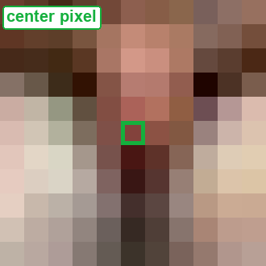
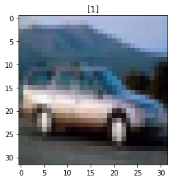
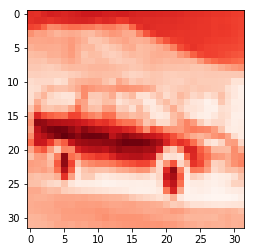
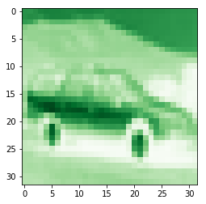
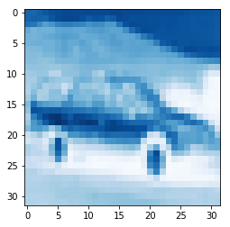
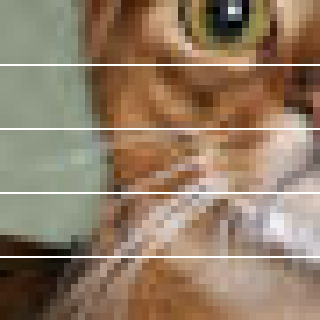
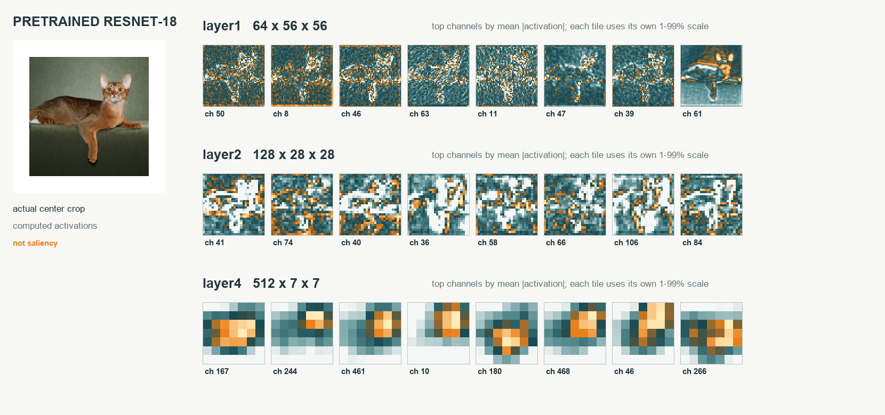
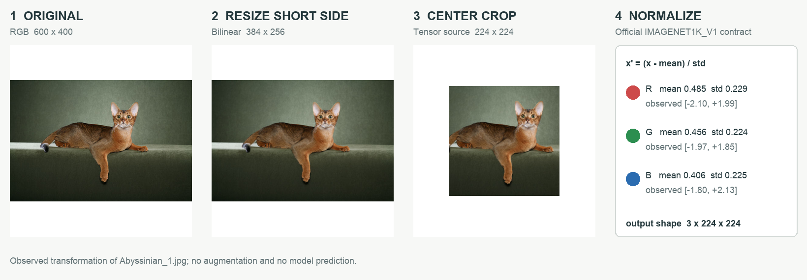

A useful training set must expose variation within a class.
Pose, lighting, scale, background, and occlusion change the pixels.
The class label can stay the same.
A model needs examples of the variation we expect it to handle.
1 · Images, data, and locality
ImageNet made data part of the story.
Categories, many examples, and a shared evaluation task.
WordNeta hierarchy of concepts
→
Imagesmany views per concept
→
Labelsa supervised prediction task
→
Benchmarka common comparison
Why would five pictures of a cat be a weak training set?
They cover very few poses, backgrounds, and lighting conditions. More examples can expose variation, though quantity alone does not fix sampling bias.
1 · Images, data, and locality
What exactly is being predicted?
One image enters. A score for every candidate class leaves.
RGB imageheight × width × 3
→
Networklearned transformations
→
1,000 logitsILSVRC classification
→
Top predictionsrank the class scores
Top-1: is the highest-scoring class correct?
Top-5: is the correct class among the five highest?
Dataset, labels, split, and metric define the experiment.
1 · Images, data, and locality
LeNet → AlexNet → deeper networks
The operation stayed simple; the scale and architectures changed.
1998 · LeNet
Learned convolutional features for document recognition.
2012 · AlexNet
Large-scale ImageNet training, ReLU, GPUs, and regularization.
What we will unpack
Local filters, shared parameters, nonlinearities, and learned hierarchies.
1 · Images, data, and locality
An image is an array of numbers.
Spatial axes and channels describe different things.

Grayscale: H × W × 1 RGB: H × W × 3
A channel is a plane of values. Three channels at one location describe one colour pixel.
1 · Images, data, and locality
Could we connect every pixel to 100 hidden units?
First count the weights of the obvious dense layer.
1 · Images, data, and locality
Flattening does not delete the pixels.
It changes the indexing. The architecture determines which relationships are easy to learn.
Image
123456789
[1, 2, 3, 4, 5, 6, 7, 8, 9]
All nine values remain. A generic dense layer gives each position its own weights.
The concern is the missing architectural constraint, not lost numerical information.
1 · Images, data, and locality
An ear is useful wherever it appears.
Should the detector need a new set of weights at every location?
What would we like to reuse?
The local calculation that detects a pattern. Its response map should move when the pattern moves.
1 · Images, data, and locality
A dense layer can learn this. Why make it learn the same thing twice?
A useful edge may appear at many locations. Make nearby pixels interact, then reuse the same weights at every location.
32 × 32 grayscale → 32 × 32 responses
Connections
Parameters, with biases
Dense
Every input → every output
1,049,600
Locally connected, 3 × 3
A different local rule at each position
10,240
Convolution, 3 × 3
One shared local rule; padding 1
10
Locality reduces connections. Sharing ties weights. They are two separate assumptions.
Flattening is reversible; it does not destroy pixel values. A dense layer simply does not enforce the spatial structure; it does not assume statistical independence of the pixels. Locally connected count includes 9 weights + 1 bias at every padded output.
1 · Images, data, and locality
Local patterns can be composed.
A larger pattern can depend on several smaller ones.
Pixelslocal contrast
→
Early featuresedges and textures
→
Later featurescombinations and parts
→
Classifierevidence for a label
This is a useful interpretation, not a promise that every channel will become a named “ear detector”.
2 · Build a local detector
Begin with the ML course’s 6×6 image.
Three bright columns meet three dark columns.
X · 6×6
111000111000111000111000111000111000
Which part of this image is an edge?
A patch of constant brightness should give little evidence for an edge.
We want a response to a change across a local neighbourhood.
2 · Build a local detector
Compare the left side with the right side.
A 3×3 kernel can ask one local question.
K · shared 3×3 weights
10-110-110-1
left column − right column
The middle column gets weight zero. Three rows repeat the comparison.
Would a uniformly bright patch respond?
3 − 3 = 0
2 · Build a local detector
First patch: all three columns are bright.
Predict the first output value.
Top-left patch
111000111000111000111000111000111000
What is y[0,0]?
(1−1) + (1−1) + (1−1) = 0
2 · Build a local detector
Move one column to the right.
The same weights now straddle the boundary.
Patch starting at column 1
111000111000111000111000111000111000
What is y[0,1]?
(1−0) + (1−0) + (1−0) = 3
2 · Build a local detector
One local calculation makes a feature map.
Four legal starts along each axis give a 4×4 result.
Input 6×6
111000111000111000111000111000111000
Output 4×4
0330033003300330
Nine kernel weights produce sixteen responses. The responses are not sixteen learned parameters.
2 · Build a local detector
One patch becomes one response.
Choose an output cell to move the kernel. Click input pixels to flip 0 ↔ 1.
Each output uses the same nine weights. Only the input patch changes.
2 · Build a local detector
Reverse the contrast. Reverse the response.
Dark → bright and bright → dark carry different signs.
Opposite contrast
000111000111000111
One output row
0-3-30
What happens if we negate the kernel instead?
Every response changes sign. A later learned layer can use either orientation.
2 · Build a local detector
The exact same calculation in PyTorch.
Name the batch and channel axes even for a single image.
x = torch.zeros(1, 1, 6, 6)
x[:, :, :, :3] = 1
k = torch.tensor([[1., 0., -1.]] * 3)
k = k.reshape(1, 1, 3, 3)
y = F.conv2d(x, k)
# y.shape: [1, 1, 4, 4]
# every output row: [0, 3, 3, 0]
A handwritten calculation and a library call should agree.
2 · Build a local detector
The kernel is not flipped.
Deep-learning libraries usually call this “convolution”; the forward operation is cross-correlation.
Y[r,c] = b + Σᵢ Σⱼ K[i,j] X[r+i,c+j]
Cross-correlation
Use K in the orientation shown in the worksheet.
Mathematical convolution
Reverse K along both spatial axes before sliding.
For a learned kernel, the model can learn either orientation. For a specified edge filter, the convention changes the answer.
Indices here use stride 1, no padding, and one channel. Bias is one scalar per output channel, shared over positions.
2 · Build a local detector
Change the question by changing the weights.
The computation stays “multiply, sum, move”.
Vertical contrast
10-110-110-1
Horizontal contrast
111000-1-1-1
Sharpen
0-10-15-10-10
An averaging filter uses nine weights of 1/9. It suppresses local variation instead of emphasizing it.
2 · Build a local detector
Return to the beach and the buildings.
The original ML tutorial photographs, with the filtering computed live.
2 · Build a local detector
Who chooses the filter?
So far, we did. In a CNN, training does.
Image-processing example
Choose K → compute Y
Useful for understanding a local operator.
Supervised CNN
Initialize K → loss → ∂L/∂K → update K
Useful patterns are selected jointly with the classifier.
3 · Padding and stride
Count the legal starting positions.
A length-3 window has four valid starts in a length-6 row.
012345
First start: 0 · last start: n − k Number of starts: n − k + 1
For a 6×6 input and a 3×3 kernel: 4×4 output.
3 · Padding and stride
What if we keep applying valid 5×5 filters?
Use the 32×32 example from the ML lecture.
3 · Padding and stride
Does every input pixel participate equally?
Count how many output patches contain each input pixel.
3 · Padding and stride
Add a border before sliding.
Zero padding makes additional kernel starts legal.
3×3 image with p=1 border
0000001110011100111000000
Input width becomes n + 2p
Output width = n + 2p − k + 1
3 · Padding and stride
When does the output keep the same size?
Solve the stride-1 equation.
n + 2p − k + 1 = n
p = (k − 1) / 2
Kernel
Symmetric padding
Output at stride 1
3×3
1
n×n
5×5
2
n×n
4×4
not an integer
needs asymmetric padding for exact same size
3 · Padding and stride
Stride chooses which starts we visit.
A length-3 kernel on length 8, stride 2.
Legal starts: 0, 2, 4
Why is start 6 invalid?
It would need positions 6, 7, and 8; the final input index is 7.
⌊(8 − 3) / 2⌋ + 1 = 3
3 · Padding and stride
Geometry changes where we ask.
Change one control at a time. The outlined input cells are the actual sampled taps.
Zero padding invents boundary values. Dilation spaces the taps; it does not add kernel weights. Output cells can be selected to inspect each placement.
3 · Padding and stride
Count moves, then include the first position.
Kernel spankₑ = d(k − 1) + 1
→
Available traveln + 2p − kₑ
→
Legal startsfloor(travel / s) + 1
nₒᵤₜ = ⌊(n + 2p − d(k−1) − 1) / s⌋ + 1
Predict: n = 6, k = 3, p = 1, s = 2, d = 1. Is the output width 3 or 4?Reveal the reasoning
3. The padded width is 8. Kernel starts 0, 2, 4 fit; start 6 would reach past the boundary. ⌊(6 + 2 − 3)/2⌋ + 1 = 3.
Apply independently to height and width. For s = 1 and odd kₑ, p = (kₑ − 1)/2 preserves size. “Same” is a padding policy, not a universal p = 1 rule.
3 · Padding and stride
Predict all three output shapes.
Keep channels separate from spatial arithmetic.
Input H×W
Kernel / padding / stride
Your prediction
7×7
3 / 0 / 2
?
7×7
3 / 1 / 2
?
32×32
5 / 2 / 1
?
3×3 · 4×4 · 32×32
Stride and padding change the number of responses. They do not create additional kernel weights.
3 · Padding and stride
Dilation spaces the samples inside a kernel.
A 3×3 kernel can span 5×5 while keeping nine weights.
Sampled offsets · dilation 2
1010100000101010000010101
Effective width = d(k−1)+1 = 2(3−1)+1 = 5
Bounding span and the number of sampled points are different quantities.
4 · Pooling, colour, and feature maps
Replace a local window by its maximum.
The first pooling example: 4×4 → 2×2.
Input
1320421501722346
With a 2×2 window and stride 2, what is the result?
Max pool
4537
No learned weights. The window size and stride are hyperparameters.
4 · Pooling, colour, and feature maps
Replace the same window by its average.
A different summary retains different information.
Same input
1320421501722346
What is the top-left average?
(1 + 3 + 4 + 2) / 4 = 2.5
Full result: [[2.5, 2], [1.5, 4.75]]
4 · Pooling, colour, and feature maps
ReLU gates responses. Pooling summarizes a window.
Compare max and average pooling with and without ReLU. This signed feature map is illustrative.
ReLU changes values, not shape. This 2 × 2, stride-2 pool changes spatial size, not channel count.
Pool each channel independently. Global average pooling instead averages the entire spatial map into one value per channel.
4 · Pooling, colour, and feature maps
What information did max pooling remove?
Two different patches can give the same pooled value.
Patch A
4000
Patch B
0004
max(A) = max(B) = 4
Some local movements become indistinguishable. A movement across a window boundary can still change the output.
4 · Pooling, colour, and feature maps
RGB is three aligned planes.
A colour image is not three unrelated photographs.




The same spatial address selects one value from each input channel.
4 · Pooling, colour, and feature maps
A single filter spans all input channels.
For RGB and a 3×3 spatial window: one filter has 27 weights.
R patch3×3 · Kᵣ
→
G patch3×3 · Kɢ
→
B patch3×3 · Kʙ
→
One responsesum all 27 products + b
y = ⟨Xᵣ,Kᵣ⟩ + ⟨Xɢ,Kɢ⟩ + ⟨Xʙ,Kʙ⟩ + b
4 · Pooling, colour, and feature maps
Three input slices. One output value.
Inspect one RGB patch. Change a channel’s kernel scale and watch its contribution change.
Sum across input channels. Stack across output filters.
Hand-chosen 2 × 2 RGB patch and weights; each channel has its own spatial weights. One bias is added after the channel sum.
4 · Pooling, colour, and feature maps
One filter gives one output channel.
A second full-depth filter asks a different question.
3 input channels
K₀: 3×3×3 → response map 0
K₁: 3×3×3 → response map 1
K₂: 3×3×3 → response map 2
… K₁₅ → response map 15
Sum over input channels. Stack across output filters.
4 · Pooling, colour, and feature maps
First add a bias. Then apply a nonlinearity.
The ML lecture’s final building block completes the layer.
z = convolution(X, K) + b a = ReLU(z) = max(0, z)
z = [−3, −1, 0, 2, 5]
a = [0, 0, 0, 2, 5]
ReLU preserves the tensor shape. One output channel shares one bias across its spatial positions.
4 · Pooling, colour, and feature maps
Why put nonlinearities between the layers?
Composition of affine maps is still an affine map.
W₂(W₁x + b₁) + b₂ = (W₂W₁)x + (W₂b₁ + b₂)
ReLU makes the composition more expressive than one affine transformation.
The same principle applies when the matrices have convolutional structure.
Add another sum over examples in the batch. With input channels, each kernel slice uses its corresponding input plane.
One kernel coefficient is updated using evidence from every place where it was reused.
7 · Follow the shared gradients
Make a whole training step small enough to inspect.
A second example complements MNIST: six 5×5 bar images.
5×5 imagehorizontal or vertical
→
2 learned filters3×3 + bias + ReLU
→
Global means2 features
→
Linear head2 logits
2×(9+1) + (2×2+2) = 26 parameters
This tiny model exposes the mechanics. MNIST supplies the larger held-out experiment.
7 · Follow the shared gradients
Can two filters separate horizontal from vertical?
Six 5 × 5 training images: one bar, two orientations, three positions. Watch the weights and prediction change.
Actual full-batch gradient descent in JavaScript, cross-entropy averaged over six images, learning rate 0.4, seed 7. All metrics are training metrics. This tiny exercise does not measure generalization to photographs.
7 · Follow the shared gradients
Turn a response map into one feature.
This inspector shares the training widget’s current model.
One spatial mean per channel gives two features for the classifier.
7 · Follow the shared gradients
A response is not a probability.
The classifier weights combine both features. Then softmax turns two logits into a distribution.
The training objective averages this image-level cross-entropy over all six examples.
Uses the current trained model and the same selected example as the preceding trace. Displayed products are rounded; calculations use full precision.
The browser uses this architecture: 26 parameters.
20 in the convolution; 6 in the classifier. ReLU and averaging have no learned parameters.
Cross-entropy expects raw logits. Use softmax only when displaying probabilities.
The architecture matches; reproducing the browser’s exact values also requires copying its weights, examples, and optimizer settings.
8 · Spatial reasoning and complete accounting
Make the numbers small enough to follow.

The existing DL lecture averages five horizontal bands from a 45 × 45 crop, then thresholds each band at 128.
Band means: 113.83, 112.37, 145.50, 145.78, 109.32
Binary rows: 0, 0, 1, 1, 0
This deliberately simplified image carries the arithmetic. It is not the photograph’s full-resolution pixel matrix.
Keep one input and one kernel in view while the operation unfolds.
8 · Spatial reasoning and complete accounting
What does an edge filter respond to?
Select a filter. The right image is computed from the left image’s grayscale pixels.
The photo comes from the existing Oxford-IIIT Pet teaching evidence. These are hand-designed filters, not learned features. Signed responses use a fixed scale: blue is negative, red is positive, white is zero.
8 · Spatial reasoning and complete accounting
Move the input. What should happen to the feature map?
Reuse of the same local rule gives a translation-equivariant operation under suitable conditions.
f(shift(X)) = shift(f(X))
Equivariance
The representation moves in the corresponding way.
Invariance
The final result stays the same.
Stride, finite boundaries, and downsampling must be part of the claim.
8 · Spatial reasoning and complete accounting
Shift the input. Does the response follow?
Compare f(shift(X)) with shift(f(X)). Circular boundaries isolate the stride effect.
At stride 1 with circular boundaries, integer circular shifts commute exactly. At stride 2, only shifts aligned to the stride have an integer output-shift counterpart. Finite zero boundaries can also break equality.
8 · Spatial reasoning and complete accounting
Pooling can change when a feature crosses a boundary.
Max pool, width 2, stride 2:
[0, 1 | 2, 0] → [1, 2] [0, 0 | 1, 2] → [0, 2]
The second input is the first shifted right by one, with zero fill. Its pooled map is not a simple integer shift of the first output.
Equivariance means the output transforms with the input. Invariance means the output stays the same.
Global averaging is invariant to permutations of the positions being averaged. A whole CNN is invariant only when its preceding feature transformation and boundaries support that claim. Low-pass filtering before subsampling can reduce aliasing; it is not a blanket guarantee.
8 · Spatial reasoning and complete accounting
Which input pixels can affect this output?
Track both receptive-field width r and the output spacing j.
A later kernel steps across locations that may already be several input pixels apart.
8 · Spatial reasoning and complete accounting
Conv → pool → conv: follow the same recurrence.
The DL course’s three-layer example.
Layer
Kernel / stride
Receptive field r
Output jump j
Input
—
1
1
Conv
3 / 1
3
1
Pool
2 / 2
4
2
Conv
3 / 1
8
2
Why does the last 3×3 layer add four pixels of reach?
(3−1) × previous jump 2 = 4
8 · Spatial reasoning and complete accounting
Depth grows the receptive field.
Select a stack. The highlighted pixels can influence one interior output, away from boundaries.
The theoretical receptive field counts possible influence. Actual influence depends on weights and activations; the effective receptive field can be much smaller.
8 · Spatial reasoning and complete accounting
The same field of view can hide different functions.
One 5 × 5 layer
25C² weights 5 × 5 receptive field
3 × 3 → ReLU → 3 × 3
18C² weights 5 × 5 receptive field
Assume C input, hidden, and output channels; stride 1; dilation 1; ignore biases.
The stacked block uses fewer weights and adds a nonlinearity. It is not numerically equivalent to an arbitrary 5 × 5 convolution.
Without ReLU, a stack is still linear (affine with biases), but factorization restricts the possible kernels, and finite padding can complicate boundary equivalence. The next ledgers compare a flatten-based head with a global-average head.
8 · Spatial reasoning and complete accounting
A large matrix with repeated entries.
[y₀] [a b 0 0] [x₀] [y₁] = [0 a b 0] [x₁] [y₂] [0 0 a b] [x₂] [x₃]
A 1-D valid kernel [a, b], no bias.
Zeros encode locality. Repeated a and b encode weight sharing.
In im2col, collect patches into columns and multiply a flattened filter by those columns.
Libraries may choose other algorithms; materializing all patches can use substantial memory.
The convolution layer is linear without bias, affine with bias. The CNN needs nonlinearities to build a richer function.
3 input channels → 16 output channels, on a 32×32 grid.
Parameters = 16×(3×3×3+1) = 448
MACs = 32×32×16×(3×3×3) = 442,368
Activations = 16×32×32 = 16,384
8 · Spatial reasoning and complete accounting
Conv2: less space, more channels.
After pooling: 16 input channels, 32 output channels, 16×16 output.
Parameters = 32×(3×3×16+1) = 4,640
MACs = 16×16×32×(3×3×16) = 1,179,648
A smaller spatial grid can still cost more when channel mixing grows.
8 · Spatial reasoning and complete accounting
Global average pooling gives one value per channel.
Each 16×16 map becomes its spatial mean.
32×16×16feature maps
→
Average over H,Wno learned parameters
→
32 valuesone per feature type
→
Linear → 1032×10 + 10 = 330 parameters
The same head accepts different spatial resolutions. It trades away detailed spatial location.
8 · Spatial reasoning and complete accounting
Write the ledger before training.
Layer
Output C × H × W
Parameters
MACs / image
Input
3 × 32 × 32
0
0
Conv 3×3, 3→16, p1
16 × 32 × 32
448
442,368
ReLU + max pool 2, s2
16 × 16 × 16
0
—
Conv 3×3, 16→32, p1
32 × 16 × 16
4,640
1,179,648
ReLU + global average
32 × 1 × 1
0
—
Linear 32→10
10 logits
330
320
Total
5,418
1,622,336
Counts include learned biases; MAC total covers only convolution and linear layers. Pooling, averaging, nonlinearities, bias additions, and softmax also cost work.
8 · Spatial reasoning and complete accounting
Shared weights still do repeated work.
Change resolution or channel counts. Predict which totals will move before touching a control.
Parameters depend on kernel and channels. Spatial resolution multiplies both computation and activation storage.
One image, square 3 × 3 convolution, stride 1, padding 1, groups 1, with bias. MACs count one multiply-accumulate as one unit; exclude biases and activation functions. Float32 storage here is only the output tensor, not total training memory.
8 · Spatial reasoning and complete accounting
Double both spatial dimensions.
Keep channels, kernels, strides, and padding fixed.
What happens to parameters, activations, and convolution MACs?
For these widths: about 46% fewer weights, plus another nonlinear stage.
9 · From LeNet to modern CNN blocks
A 1 × 1 filter is a shared channel mixer.
x at one position = [2, 1, 3] w = [1, −2, 0.5]
y = 2 − 2 + 1.5 = 1.5
Apply this same affine map independently at every spatial position.
3 → 16 channels needs 64 parameters with biases, even though the spatial footprint is one pixel.
It changes the channel representation. It does not directly read neighboring spatial positions.
“1 × 1” describes spatial extent, not the number of multiplications.
9 · From LeNet to modern CNN blocks
Make the expensive spatial operation narrow.
Keep 28×28 resolution; map 64 channels to 128.
1×164 → 16
→
3×316 → 16
→
1×116 → 128
Standard 3×3: 28²×9×64×128 = 57,802,752 MACs
A bottleneck reduces channel width before doing the expensive spatial mixing.
9 · From LeNet to modern CNN blocks
Did the bottleneck meet the target?
Change the intermediate width and recalculate all three layers.
9 · From LeNet to modern CNN blocks
Try several spatial scales in parallel.
Inception combines different local questions at the same resolution.
28×28×64
1×1 → 32 channels
1×1 → 3×3 → 48 channels
1×1 → 5×5 → 16 channels
pool → 1×1 → 32 channels
Concatenate: 32 + 48 + 16 + 32 = 128 channels
All branch heights and widths must match. Concatenation adds channels.
9 · From LeNet to modern CNN blocks
Ask the next block to learn a correction.
Preserve a direct route for the current representation.
y = x + F(x)
9 · From LeNet to modern CNN blocks
Try the shortcut with one number.
Let x = 2 and F(x) = ax.
9 · From LeNet to modern CNN blocks
Keep a path for the existing representation.
y = x + F(x)
∂L/∂x = ∂L/∂y · (I + ∂F/∂x)
If F(x) starts small, the block begins near the identity. Learning a useful correction can be easier than relearning a whole mapping.
Addition needs matching shapes. If channels or resolution change, use an appropriate projection P(x): y = P(x) + F(x).
The direct path gives gradients another route. It does not guarantee that gradients can never vanish or explode.
This is the residual sum before any optional post-addition nonlinearity. The identity derivative shown applies to a shape-matched identity skip.
9 · From LeNet to modern CNN blocks
Depthwise + pointwise factors the operation.
32 channels
→
3 × 3 depthwiseone spatial kernel per input channel
→
1 × 1 pointwisemix 32 channels into 64
Standard 3 × 3, 32 → 64
9 × 32 × 64 = 18,432 weights
Depthwise + pointwise
9 × 32 + 32 × 64 = 2,336 weights
About 7.89× fewer weights and MACs at equal output resolution, excluding bias and other operations.
This factorization restricts the kernel family. It is not an exact replacement for every standard convolution, and lower MACs do not guarantee proportional latency savings.
9 · From LeNet to modern CNN blocks
Look inside the real pretrained backbone.
The same pet photograph passes through ResNet-18.

Spatial resolution decreases while the number of channels increases.
10 · Transfer, representations, and checks
Start from a representation that has learned useful structure.
Your imagesmatching preprocessing
→
Pretrained backbonefreeze, then optionally fine-tune
→
New task headfit to your labels
First comparison
Train a new head on frozen features. Choose hyperparameters using validation data. Compare with a simple baseline.
Then fine-tune
Unfreeze deliberately, usually with a smaller backbone learning rate. Keep the final test set sealed.
Freezing gradients, setting evaluation mode, and disabling autograd are different operations.
requires_grad_(False) freezes parameters; eval() changes modules such as BatchNorm and dropout; no_grad() disables graph recording. Freezing alone does not freeze BatchNorm running statistics.
10 · Transfer, representations, and checks
A frozen backbone can become a feature extractor.
This is the ML lecture’s “store activations” transfer-learning recipe.
Training imagesfixed preprocessing
→
Frozen backboneevaluation mode
→
Stored featuresone vector per image
→
New classifiertrain on your labels
Caching is valid only while the feature computation stays fixed.
10 · Transfer, representations, and checks
The pretrained weights come with a preprocessing contract.
Resize, crop, range, and normalization affect the representation.

Use the preprocessing associated with the selected pretrained weights.
10 · Transfer, representations, and checks
Freezing, evaluation mode, and no_grad do different jobs.
Three independent controls are easy to confuse.
Control
What it changes
requires_grad_(False)
whether parameter gradients are computed
model.eval()
behaviour of dropout and BatchNorm
torch.no_grad()
whether this forward pass records an autograd graph
A frozen backbone left in train mode can still update BatchNorm running statistics.
Batch, channels, spatial dimensions, and learned parameters are four different counts.
10 · Transfer, representations, and checks
Can you explain the network without naming an architecture?
Why do shared weights receive a sum of gradients?
The same parameter affects many spatial outputs. The chain rule adds its contribution along every path to the loss.
Does a larger image change model capacity or cost?
With convolution and global pooling, learned parameter count stays fixed. Spatial compute and activation storage grow. A flatten-based fixed-size head would change this answer.
Why is the browser’s high training accuracy insufficient?
It trained on six clean synthetic images and reports those same examples. Generalization requires independent evaluation on a declared target distribution.